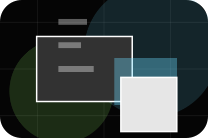
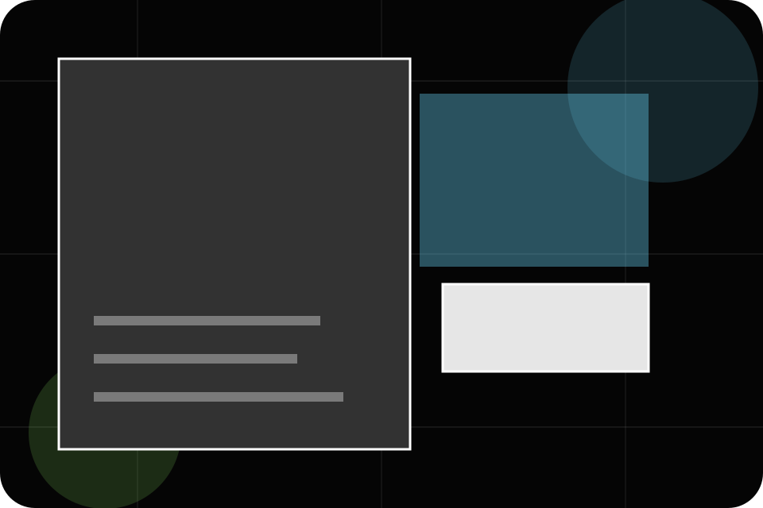
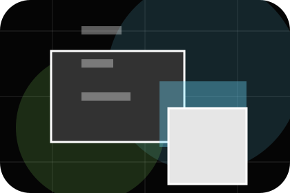
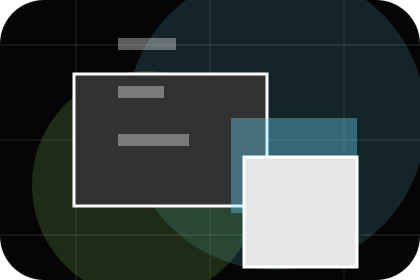
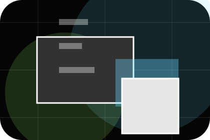
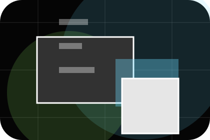
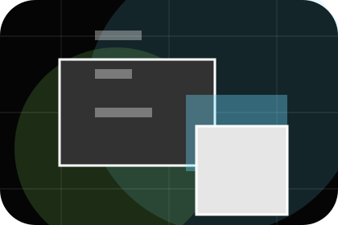
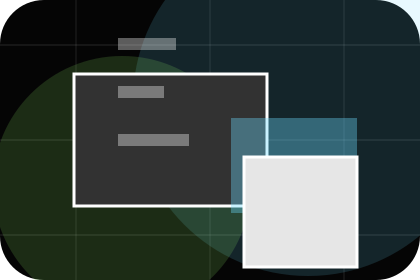
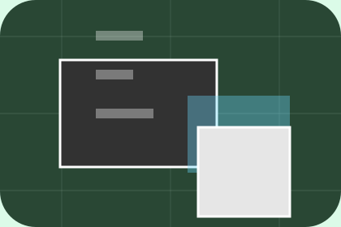

Role
The person, team, or specialist function connected to team is easy to understand.
Agency / 01
Agency opens as a clear marketing decision hub: what Spark offers, who it helps, why it matters, and which route to take first.
The first screen combines positioning, proof, primary action, and fast internal navigation, so people can act immediately or compare the rest of the agency route with context.
Immersive case-study hero
Select the closest route and Spark keeps the next step, proof, and follow-up expectation aligned with results and creative confidence.

Agency / 02
Team introduces the people, roles, or specialist credibility behind Spark so the decision feels less anonymous.
The copy ties names, roles, credentials, or availability back to the decision on the page instead of treating profiles as decorative biographies.
Explore Agency
The person, team, or specialist function connected to team is easy to understand.

Credentials, responsibilities, or availability are tied to the visitor's decision, not listed for decoration.
The section explains how to move from profile interest to a practical conversation or booking path.
Agency / 03
Culture adds professional context to the agency route, using the dark agency case system structure to support results and creative confidence before visitors choose a next step.
Spark uses dark campaign cards and focused copy to make the decision easier to scan, aligning the section with results and creative confidence rather than filling space.
Explore AgencySpark structures culture around context, judgment, and a clear next route so visitors can compare the block quickly before they send a campaign brief.
Send Campaign BriefAgency / 04
Values adds professional context to the agency route, using the dark agency case system structure to support results and creative confidence before visitors choose a next step.
Spark uses dark campaign cards and focused copy to make the decision easier to scan, aligning the section with results and creative confidence rather than filling space.
Explore AgencyValues gives the page a specific angle instead of repeating the navigation label.

The dark campaign cards show what to compare, what to avoid, and what matters most for marketing, advertising & communications visitors.
The final cue points to a useful internal route so the section keeps the journey moving.
Agency / 05
Standards gives the proof layer for agency: standards, evidence, and reassurance that make the next decision feel grounded.
Instead of relying on vague claims, Spark presents visible standards, process cues, and proof artifacts that help marketing visitors judge fit.
Explore AgencyVisible proof that helps visitors believe the claims behind standards.
Agency / 06
Fit adds professional context to the agency route, using the dark agency case system structure to support results and creative confidence before visitors choose a next step.
Spark uses dark campaign cards and focused copy to make the decision easier to scan, aligning the section with results and creative confidence rather than filling space.
Explore AgencyFit gives the page a specific angle instead of repeating the navigation label.

The dark campaign cards show what to compare, what to avoid, and what matters most for marketing, advertising & communications visitors.

The final cue points to a useful internal route so the section keeps the journey moving.
Agency / 07
Recognition adds professional context to the agency route, using the dark agency case system structure to support results and creative confidence before visitors choose a next step.
Spark uses dark campaign cards and focused copy to make the decision easier to scan, aligning the section with results and creative confidence rather than filling space.
Explore AgencyRecognition gives the page a specific angle instead of repeating the navigation label.
The dark campaign cards show what to compare, what to avoid, and what matters most for marketing, advertising & communications visitors.
The final cue points to a useful internal route so the section keeps the journey moving.
Agency / 08
Experience adds professional context to the agency route, using the dark agency case system structure to support results and creative confidence before visitors choose a next step.
Spark uses dark campaign cards and focused copy to make the decision easier to scan, aligning the section with results and creative confidence rather than filling space.
Explore AgencyExperience gives the page a specific angle instead of repeating the navigation label.
The dark campaign cards show what to compare, what to avoid, and what matters most for marketing, advertising & communications visitors.
The final cue points to a useful internal route so the section keeps the journey moving.
Agency / 09
Trust gives the proof layer for agency: standards, evidence, and reassurance that make the next decision feel grounded.
Instead of relying on vague claims, Spark presents visible standards, process cues, and proof artifacts that help marketing visitors judge fit.
Explore Agency

Visible proof that helps visitors believe the claims behind trust.
Agency / 10
Spark closes the agency route with a clear action, a quick reminder of the value, and a low-friction way to send a campaign brief.
Visitors who are ready can use the primary action. Visitors who are still comparing can scan the section links, proof, and support routes before they send a campaign brief.
Send Campaign BriefThe final block keeps the choice simple: act now, compare one more proof route, or send enough detail for a focused response.
Send Campaign Briefresults and creative confidence
A marketing agency site with immersive black work panels, sharp case filters, results proof, and brief routes. Agency ends with a direct path to send a campaign brief, plus enough context for visitors who still need to compare.

Send Campaign BriefInformation is provided for planning and should be reviewed for the final client, location, and operating rules.